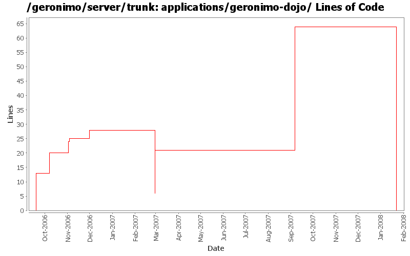

[root]/applications/geronimo-dojo
 repository
(0 files, 0 lines)
repository
(0 files, 0 lines)
 org
(0 files, 0 lines)
org
(0 files, 0 lines)
 dojotoolkit
(0 files, 0 lines)
dojotoolkit
(0 files, 0 lines)
 dojo
(0 files, 0 lines)
dojo
(0 files, 0 lines)
 0.3.1
(0 files, 0 lines)
0.3.1
(0 files, 0 lines)
 0.4.0
(0 files, 0 lines)
0.4.0
(0 files, 0 lines)
 src
(0 files, 0 lines)
src
(0 files, 0 lines)
 main
(0 files, 0 lines)
main
(0 files, 0 lines)
 webapp
(0 files, 0 lines)
webapp
(0 files, 0 lines)
 WEB-INF
(0 files, 0 lines)
WEB-INF
(0 files, 0 lines)
 site
(0 files, 0 lines)
site
(0 files, 0 lines)

| Author | Changes | Lines of Code | Lines per Change |
|---|---|---|---|
| Totals | 26 (100.0%) | 114 (100.0%) | 4.3 |
| pmcmahan | 10 (38.5%) | 64 (56.1%) | 6.4 |
| jdillon | 10 (38.5%) | 32 (28.1%) | 3.2 |
| jlaskowski | 2 (7.7%) | 12 (10.5%) | 6.0 |
| kevan | 1 (3.8%) | 3 (2.6%) | 3.0 |
| prasad | 1 (3.8%) | 1 (0.9%) | 1.0 |
| hogstrom | 1 (3.8%) | 1 (0.9%) | 1.0 |
| dain | 1 (3.8%) | 1 (0.9%) | 1.0 |
(GERONIMO-3747) Moved applications/* to plugins/*
0 lines of code changed in 3 files:
GERONIMO-3458 add Dojo license and notice
43 lines of code changed in 2 files:
* updated copyright date to 2007
1 lines of code changed in 1 file:
Changed trunk to 2.1-SNAPSHOT
1 lines of code changed in 1 file:
GERONIMO-3210 - upgrade to dojo 0.4.3
2 lines of code changed in 1 file:
r6693@Bliss: jason | 2007-03-19 15:28:23 -0700
Use ${project.build.directory} and ${project.build.outputDirectory} to root to target/ and target/classes
4 lines of code changed in 1 file:
Add legal files
16 lines of code changed in 1 file:
Add dojo to DM, using dojoVersion property because this value is needed by plugin than can't use DM
Added jstl to repository config and fixed indent
0 lines of code changed in 1 file:
Drop remaining module-local bits that someone forgot :-P
0 lines of code changed in 1 file:
Use maven-dependency-plugin
2 lines of code changed in 1 file:
GERONIMO-2639 upgrade dojo to 0.4.1
merge from server/branches/1.2
1 lines of code changed in 1 file:
GERONIMO-2537 Merge from branches/1.2 onto trunk. I have not reviewed trunk license info. So, it's possible that there are already some deltas which should be reflected in license/notice files. This change updates the general LICENSE.txt and NOTICE.txt files. Note that I've expanded the notice/license files in the root of a source distribution. Also added required copyright to NOTICE.txt files. Note that minimal distributions have an overly broad license/notice files. Also, we have multiple copies of the same general license/notice files. Would be good to reduce these.
3 lines of code changed in 1 file:
Changed version to 2.0-SNAPSHOT
1 lines of code changed in 1 file:
GERONIMO-2537 All Geronimo source files must be brought in line with the new ASF source header and copyright notice policy
Fix for applications
6 lines of code changed in 1 file:
Maintain Dojo version from a single place
6 lines of code changed in 1 file:
GERONIMO-2538 upgrade Dojo to 0.4.0. Thanks Jay McHugh for the patch.
5 lines of code changed in 3 files:
Using ${version} instead of ${pom.version} in a feeble attempt to get around ${pom.version} changing to its timestamp version for SNAPSHOT artifacts
1 lines of code changed in 1 file:
Use std module-local repo def, with snaps disabled
9 lines of code changed in 1 file:
GERONIMO-2406
13 lines of code changed in 3 files: